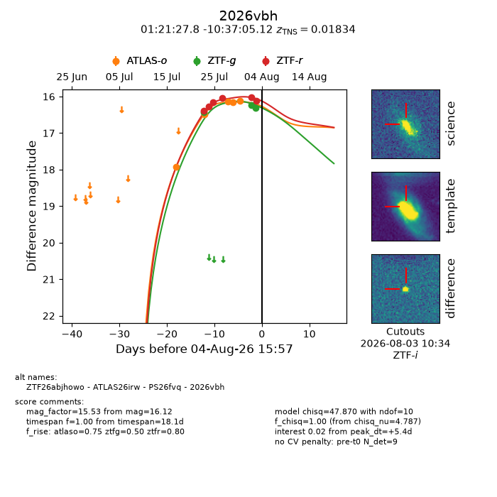
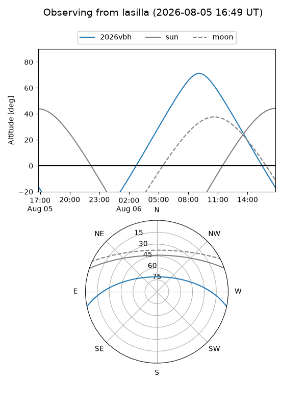
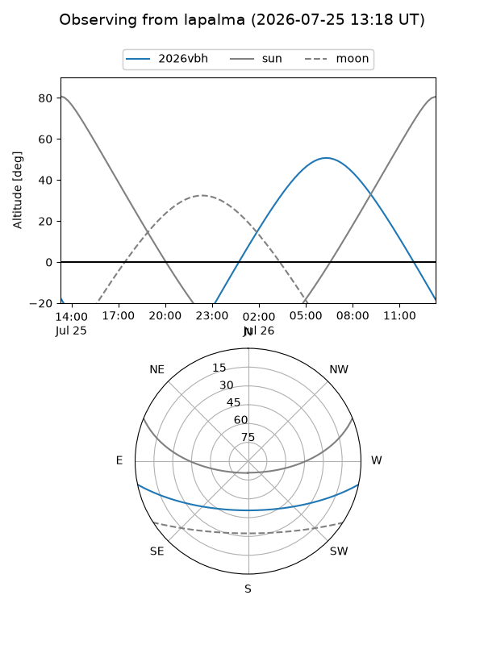
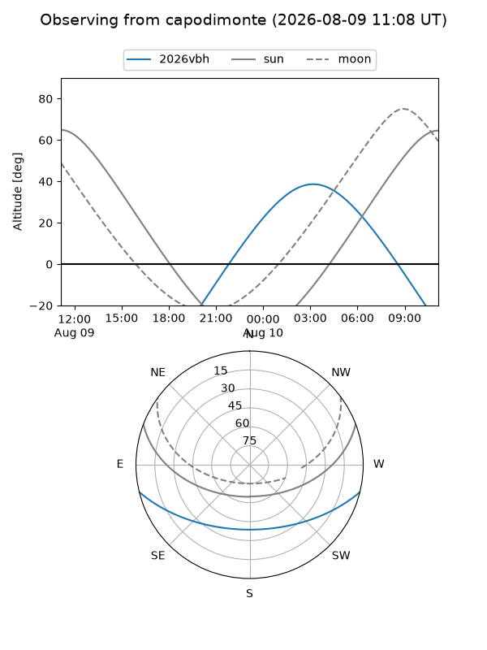
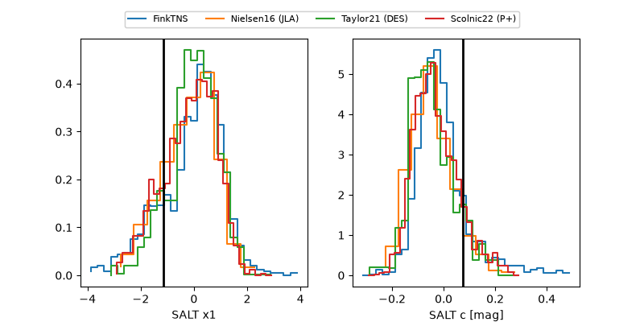

2026vbh
Target 2026vbh at 2026-08-04 16:00
Aliases and brokers:
FINK-ZTF: ztf.fink-portal.org/ZTF26abjhowo
Lasair-ZTF: lasair-ztf.lsst.ac.uk/objects/ZTF26abjhowo
ALeRCE-ZTF: alerce.online/object/ZTF26abjhowo
YSE-PZ: ziggy.ucolick.org/yse/transient_detail/2026vbh
TNS name: wis-tns.org/object/2026vbh
Direct TNS query: direct search
alt names
ZTF26abjhowo (ztf,fink_ztf)
2026vbh (tns,yse)
ATLAS26irw (atlas)
PS26fvq (panstarrs)
Coordinates:
equatorial (ra, dec) = 20.3660,-10.61809
equatorial (HMS+DMS) = 01:21:27.84,-10:37:05.12
galactic (l, b) = (147.5404,-72.04013)
Flags:
TNS type: SN Ia
TNS redshift: 0.0183
peak dt: +5.4
Photometry:
last atlaso=16.13, ztfg=16.30, ztfr=16.12
5 atlaso, 3 ztfg, 6 ztfr detections
Lightcurve

Visibility



Additional plots
